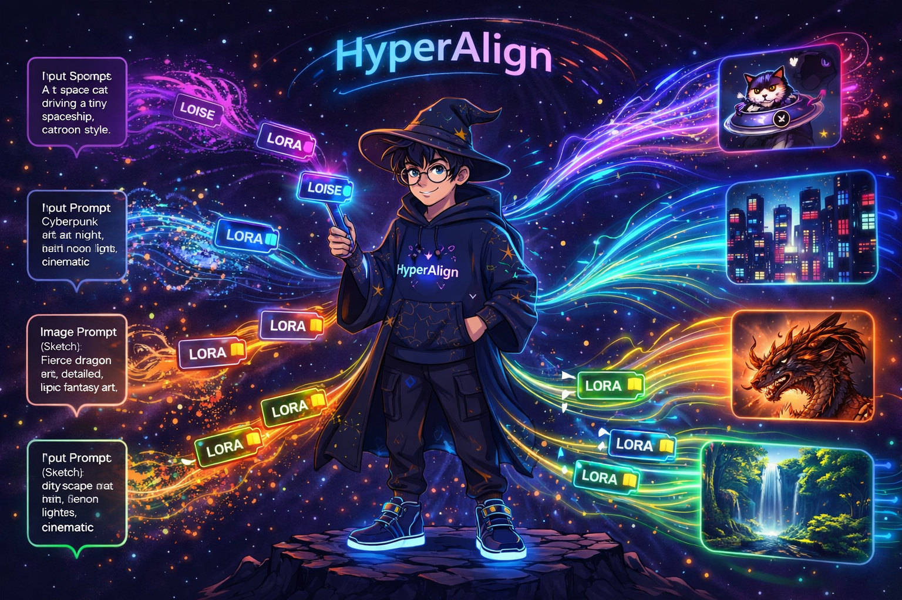
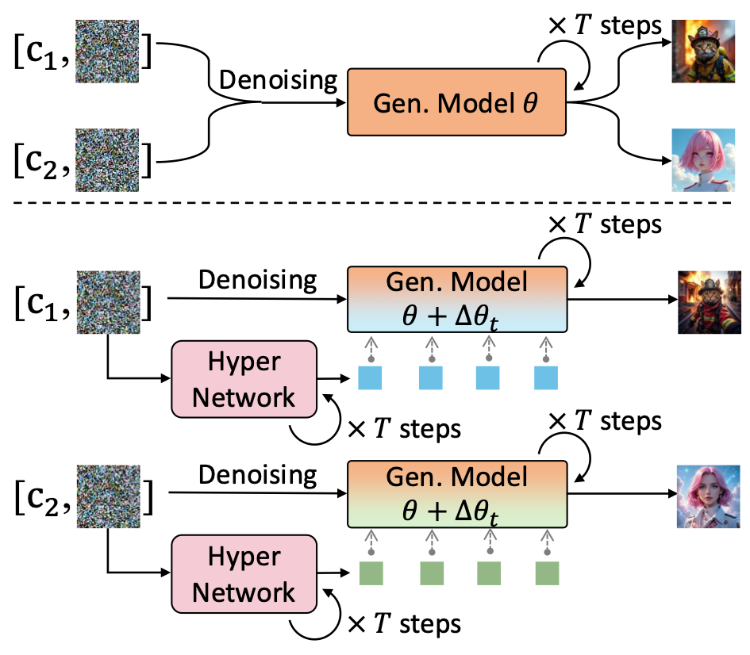
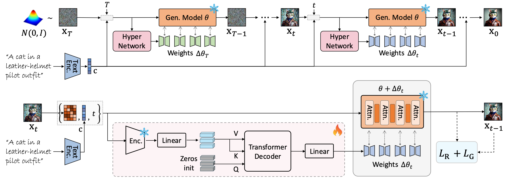
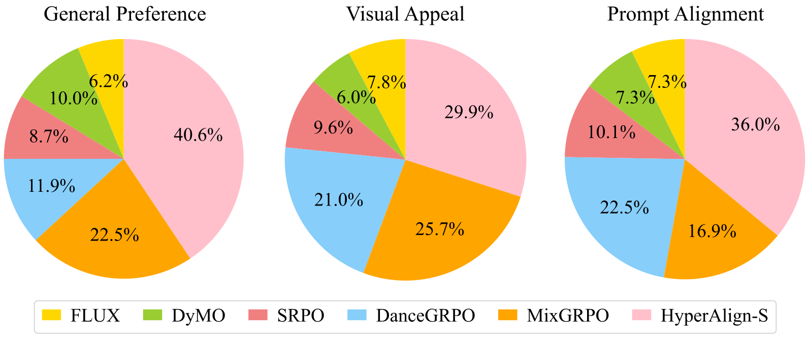
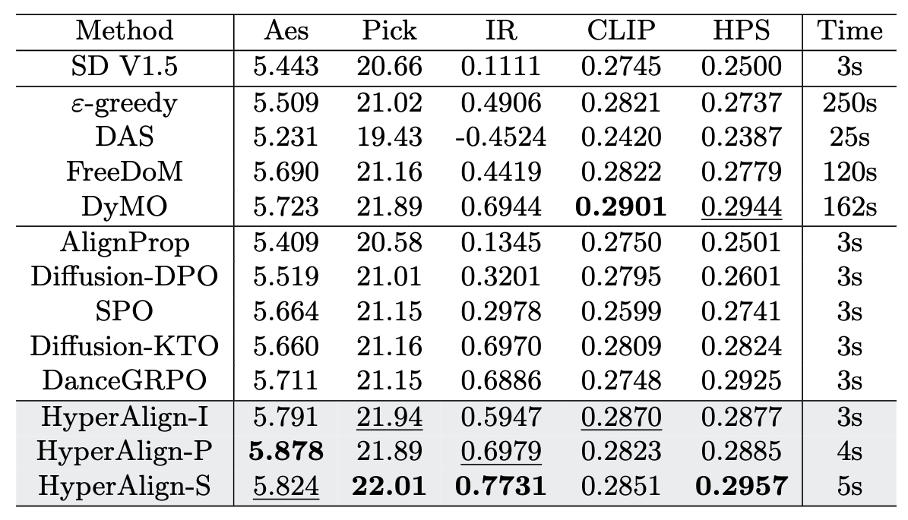
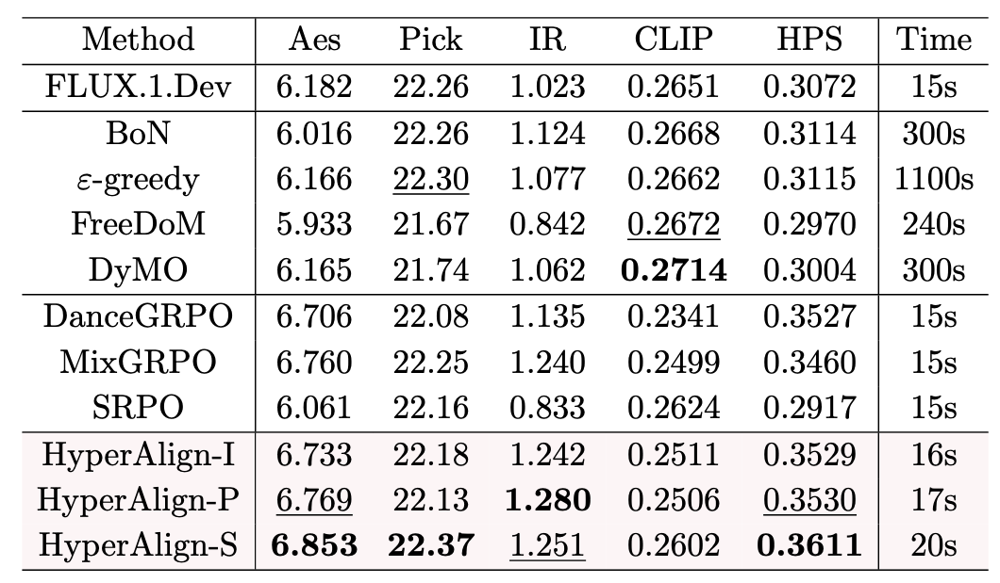

HyperAlign: Hypernetwork for Efficient Test-Time Alignment of Diffusion Models


Sample images generated by HyperAlign based on FLUX backbone. The generated images not only achieve a high alignment with text prompt and human preferences, but also exhibit visually attractive and stunning aesthetics.
Abstract
Diffusion model alignment aims to bridge the gap between generated outputs and human preferences by enhancing both semantic consistency with textual prompts and overall visual quality. Existing alignment methods face a challenging trade-off: test-time approaches enable input-specific adaptability but introduce significant computational overhead and tend to under-optimize, while fine-tuning approaches risk reward over-optimization and loss of generation diversity.
To bridge this gap, we propose HyperAlign, a framework that trains a hypernetwork for efficient and effective test-time alignment. Instead of modifying latent states directly, HyperAlign dynamically generates input-and-state-conditioned low-rank adaptation weights to modulate the denoising trajectory toward target rewards. We introduce multiple HyperAlign variants of varying granularity to balance alignment quality and computational efficiency. The hypernetwork is optimized with a reward objective regularized by preference data to mitigate reward hacking.
We evaluate HyperAlign across multiple generative paradigms, including Stable Diffusion and FLUX, where it significantly outperforms existing alignment methods in semantic consistency and visual quality.


Task-specific test-time alignment of HyperAlign. Compared to the original generative model, HyperAlign adapts the model’s behavior to each combination of prompt and temporal states, producing aligned and visually appealing results.
Method Overview

The framework of HyperAlign. Given a user prompt, the hypernetwork produces step-wise modulation weights \( \Delta\theta_t \) that are injected into the generative model to steer the denoising trajectory (top). During training (bottom), the hypernetwork is optimized using the reward loss and the preference-regularization loss, enabling it to produce input-specific adjustments.
HyperAlign Variants
Generate fresh LoRA weights at every denoising step.
Generate LoRA weights once at the start of denoising. Reuse identical weights for all \( T \) steps.
Different stages have varying denoising behaviors.
Regenerate LoRA weights only at several key timesteps.
Our hypernetwork is trained end-to-end by backpropagating supervision signals directly through the frozen pre-trained model and dynamically on-the-fly generated LoRA weights, requiring no pre-trained LoRA targets as supervision.
Qualitative Results

Qualitative comparison based on SD V1.5 backbones.

Qualitative comparison based on FLUX backbones.
Showcases


More Visual Results


Evaluation

User study results.

Comparison of AI feedback on SD V1.5-based methods.

Comparison of AI feedback on FLUX-based methods.
BibTeX
@article{xin2026hyperalign,
title={HyperAlign: Hypernetwork for Efficient Test-Time Alignment of Diffusion Models},
author={Xie, Xin and Guo, Jiaxian and Gong, Dong},
journal={arXiv preprint arXiv:2601.15968},
year={2026}
}